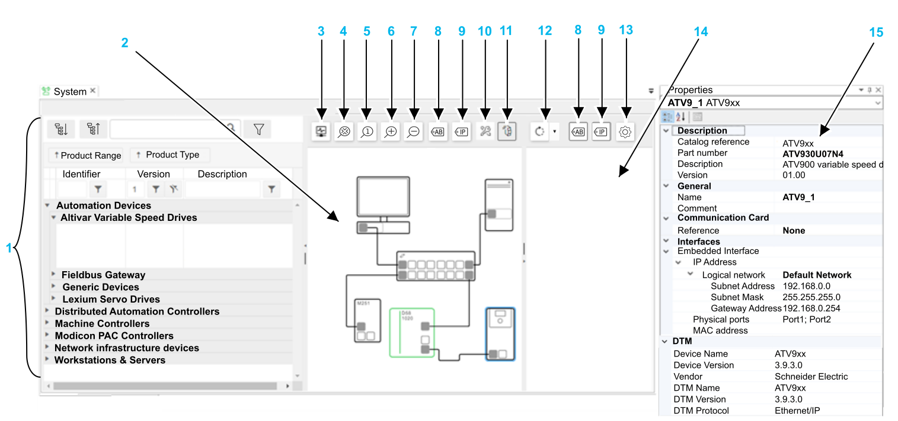

Physical Devices Editor
The Physical devices editor is where the hardware devices are defined. The physical network of your application has to be recreated to establish communication between devices.
To recreate the layout and configuration of the physical devices in your system and make them communicate with each other:
Any dPAC devices that you add and configure in the Physical devices editor are subsequently available for selection in the Logical Devices editor, where they can be associated with instantiated devices in your application.

|
To learn more about how to create a network of your physical devices, watch How to Create a Physical Topology in EcoStruxure Automation Expert. |
User Interface

-
Device catalog: Lists the available devices.
-
Physical Devices view: The workspace area for designing the network devices.
NOTE: When opening EcoStruxure Automation Expert - Buildtime through EcoStruxure Automation Expert Platform, as it is a collaborative design, you will see there the devices configured in:-
EcoStruxure Automation Expert - Buildtime
-
EcoStruxure Automation Expert Platform
-
Other software
Only the devices configured in EcoStruxure Automation Expert - Buildtime are enabled and can be edited.
To know more about EcoStruxure Automation Expert Platform, refer to the Quick Start Guide.
-
-
Start/Stop Monitoring: toggles on and off system diagnostic.
-
Fit To Content: expands or shrinks the network devices to fit the workspace area.
-
Actual Size: Sets the network devices to their actual (100%) size.
-
Zoom In: Zooms in by incrementally enlarging the network display size.
-
Zoom Out: Zooms out by incrementally shrinking the network display size.
-
Invert name labels visibility: Toggles on and off the display of device name in a label above the device in the physical devices view or in the discovery view.
-
Invert IP labels visibility: Toggles on and off the display of IPv4 addresses in a label above the device in the physical devices view or in the discovery view.
-
Enter credentials to enable HADA controllers monitoring.
NOTE: To have more information about High Availability Disruption Avoidance Soft dPAC controllers, refer to the High Availability Disruption Avoidance Soft dPAC - User Guide. -
Open/Close Discovery View: Opens/closes the discovery view area.
-
Start/Stop Discovery: Starts and stops the discovery of devices in the network. The discovered devices appear in the discovery view area.
-
Discovery settings: Opens the Discovery Settings dialog that offers the selection of IPv4 and/or IPv6 addressing.
-
Discovery view area: Displays the discovered devices.
-
Properties pad: Displays the properties of the selected device.